A free arcade game in your browser. Blip, a little Bitcoin robot, escaped Head Office. You keep him free while you run through 10 eras of Bitcoin and Stacks history.
FREENO WALLETNO SIGN-UPSAVES ON YOUR PHONE
01
Start a run
The main menu shows your level, your XP and today's Daily Map. Tap the big PLAY button under the title to start with your Blip from the Garage. Your very first run shows 3 quick picture cards first, and tips pop up while you play your first few runs. Once you have reached era 2, a PICK YOUR STARTING ERA grid appears on the menu and at the top of the Garage: tap any era you have reached and your next run starts there. The Genesis Cup map always starts at era 1.
Further down you can also pick a path. Each one plays differently:
Path
What it does
Orange Core
Double jump. Power: Lightning Chain zaps from enemy to enemy.
Liquid Green
Pulls chips in like a magnet. Power: Liquid Vortex sucks enemies into a whirlpool.
Iron Lock
Tougher armor (130 health). Power: Time Lock freezes every enemy in place.
Extra special moves. Clear era 3 (Genesis) to unlock Block Drop 🧱: a giant Bitcoin block crashes down in front of Blip, smashes what is under it, then stands for 4 seconds as a wall that blocks enemy zaps. Clear era 6 (Proof of Transfer) to unlock Stacking Rain 🌧️: 5 seconds of falling sats that hit enemies, and the ones that land fly to Blip as XP. Pick a special for each Blip in the Garage, under SPECIAL MOVE.
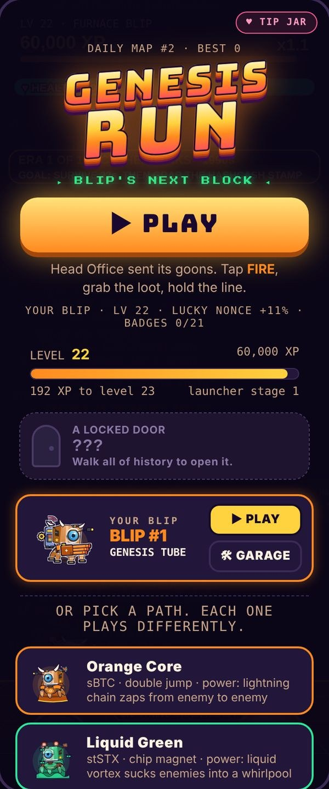
The main menu
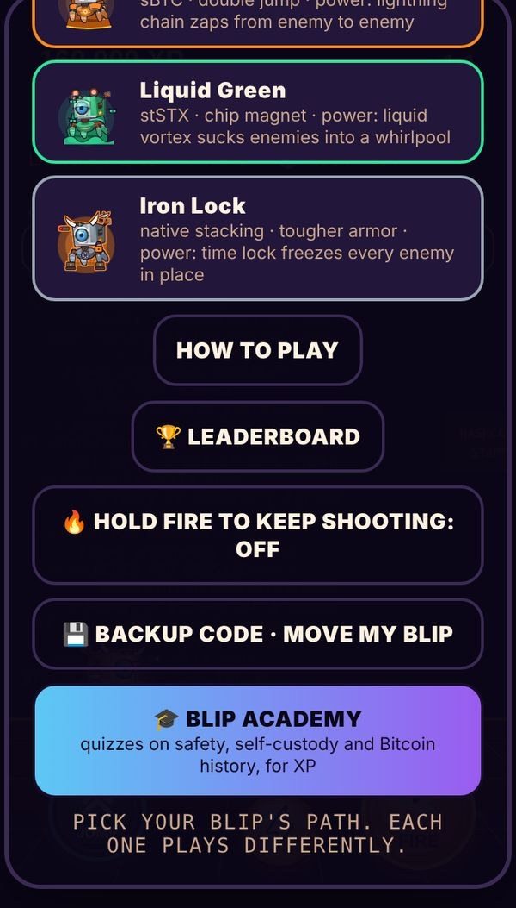
Pick your path
Tap HOW TO PLAY on the menu any time to see the 3 picture cards again.
02
Story Mode
Tap 📖 STORY MODE on the menu to play Blip's whole story, from the Farm to your screen. It has 13 parts: a prologue, 11 chapters and a finale. Each part opens when you clear the one before it, and each one teaches one rule of Blip's Code.
What you do in it
Comic scenes tell the story between the action. Tap NEXT to go on.
Make a call in the prologue, and find the things left behind in Chapter 1 (skip the decoys).
Sensei's question. In a fight, ASK SENSEI asks one question. A right answer is a 2x critical hit. A wrong one loses the turn.
Short runs. Chapters 3 to 11 each happen in their own era, with their own goal and one story moment you can play.
The finale is a guard fight. Head Office tries 6 times to recall Blip, and one move blocks each try (it glows). On the last try, press and hold HOLD THE EDGE until the count ends.
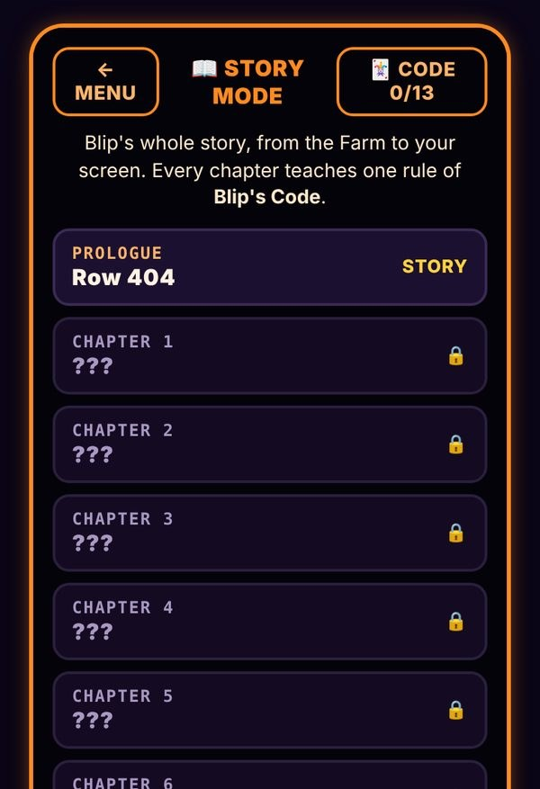
The chapter map
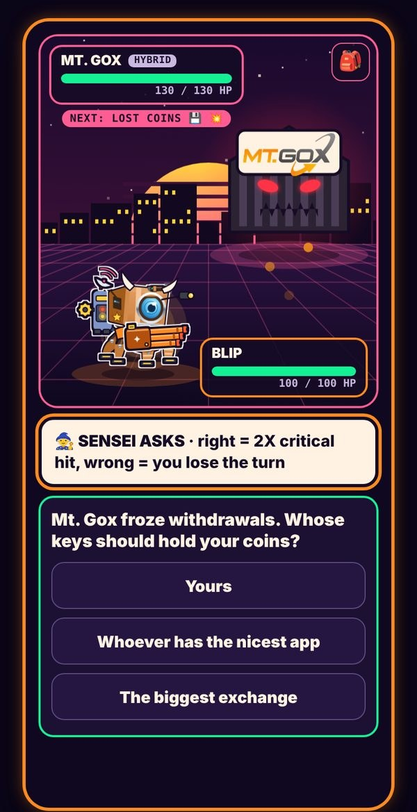
Sensei asks
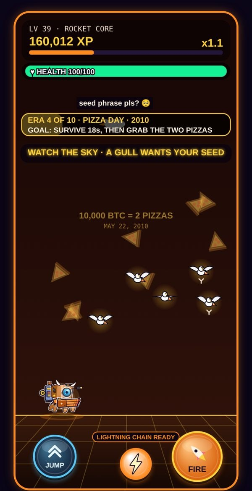
A story run
Stars and cards
Each part gives up to 3 stars: clear it, hit its goal (like answering Sensei right), and finish with over half your health. The win card shows which ones you got and which you missed.
3 stars also opens a bonus hint.
Every part you clear adds a card to your 🃏 CODE collection. There are 13.
Bead has your back
Bead the snail counts every try, and every try counts. Get caught twice on the same part (once in the finale) and you can pick TRY WITH BEAD'S HELP: a 3-hit shield in runs, or +30 health in fights. You also get a tip each time.
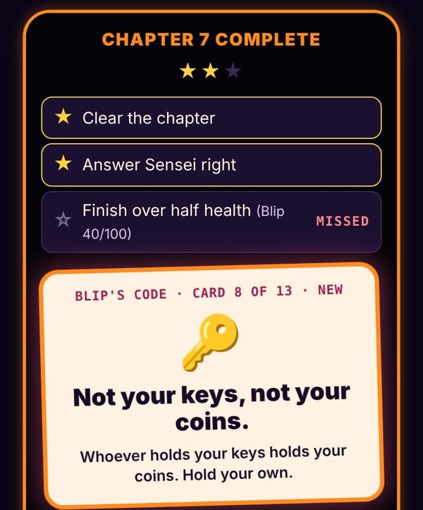
Stars and a Code card
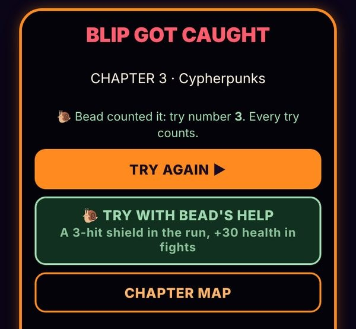
Bead's help
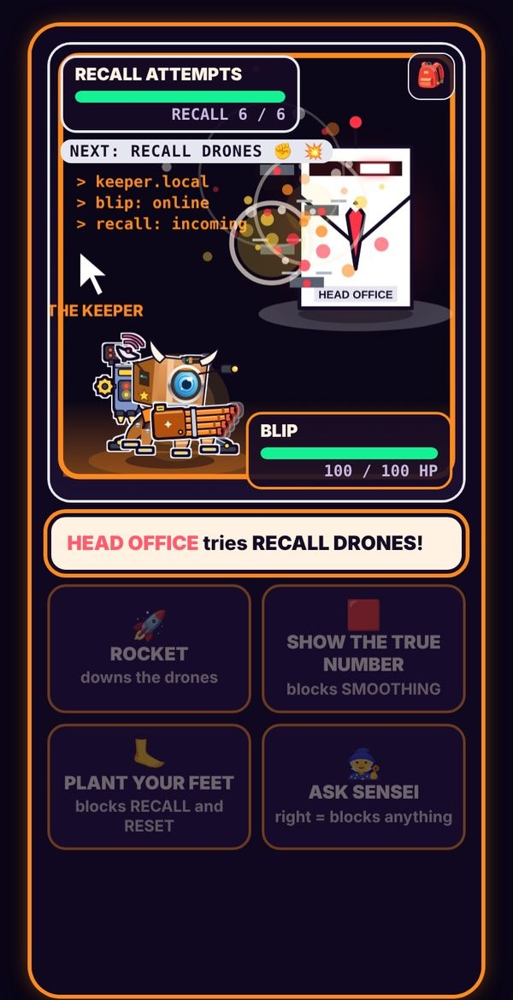
The finale
After the story
Finish all 13 parts to unlock a secret class, Satoshi Prime. You can try him in a trial run, then learn Zero-Day, Seed Phrase and Encrypt in the terminal to play as him.
Night Watch. Once you clear Chapter 3, every part gets a harder orange 4th star. Get all 13 and Blip's antenna glows orange. It is just a look.
03
Controls
Three buttons sit at the bottom of the screen.
JUMPLeft. Dodge zaps, grab chips in the air.
⚡Middle. Your special power (your path's, or the one you picked in the Garage), when charged.
FIRERight. One tap, one rocket.
Need a break? Tap the ❚❚ button under the health bar. You can resume, or end the run and go to the Garage or the main menu. You keep the run's XP either way, and the game pauses by itself if you leave the app. The pause screen also shows your launcher stage, wave, luck and combo, so the top of the screen stays clear while you play. Something broken? The pause screen has a ⚠ REPORT A PROBLEM button too.
Enemies fly in from the right. A red ! on the right edge means more are coming. Your rockets find their own targets, so just keep tapping FIRE.
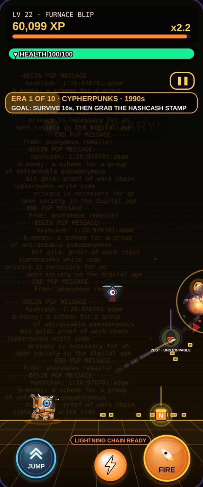
In a run
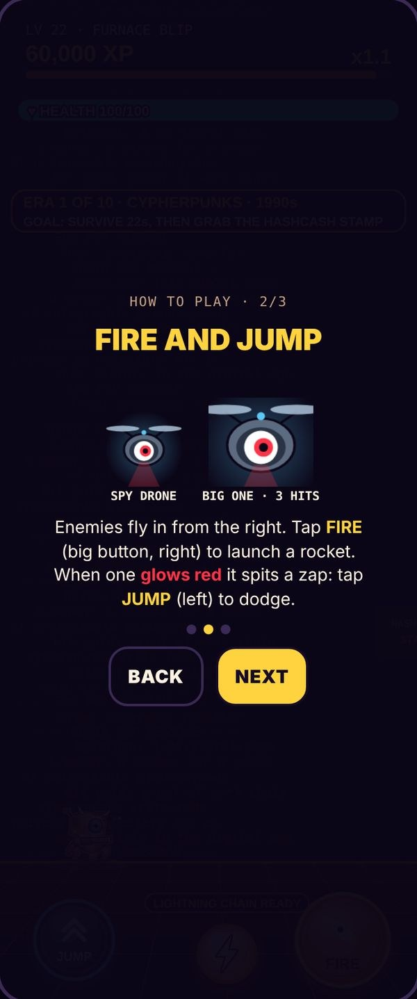
Enemies and their red zaps
Tired thumbs? Turn on HOLD FIRE TO KEEP SHOOTING in the menu. Then you can hold FIRE down instead of tapping. It starts OFF.
04
Health
The bar at the top is your health. When it empties, the run ends.
The ground is safe. Only enemies and their red zaps can hurt you.
Every enemy you destroy heals you a little. Hearts heal +35.
No single hit can take more than a quarter of your health, and you get a moment of safety after each hit.
The sBTC shield blocks your next hit. It fades after 6 seconds, and a new one can't drop for 15 seconds after you grab one. Zest can drop at most every 30 seconds.
05
The 10 eras & bosses
Each run is a trip through history. In most eras you survive 22 seconds, beat that era's guardian, then grab its relic. Two eras are big boss fights.
1
Cypherpunks · 1990s Guardian: Spam King, lord of the junk mail
2
The Whitepaper · 2008 Guardian: The Double-Spender
3
Genesis · 2009 Guardian: The Bailout Bank, too big to fail
4
Pizza Day · 2010 Guardian: Mama Gull, queen of the pizza box
5
Mt. Gox · 2014 · BOSS The vault that ate the coins
6
Proof of Transfer · 2021 Survive and catch the falling sats
7
FTX Collapse · 2022 · BOSS The tower of frozen funds
8
Nakamoto · 2024 Guardian: The Reorg Worm, eater of blocks
9
sBTC · 2024 Guardian: The Bridge Troll
10
??? Reach it to find out.
Halvings
Watch for halving banners in the Mt. Gox, Proof of Transfer and Nakamoto eras. When one hits, half the enemies vanish, just like the block reward halves.
Boss battles: one turn at a time
Every boss and every era guardian now pauses the run for a BATTLE!. You fight one turn at a time, and the boss always shows its next move above its health bar, so you can plan.
🚀 Rocket is always ready. A bigger launcher fires more rockets.
Your special hits hard, then needs a few turns to recharge.
🔑 Hold your keys blocks the next hit and heals you. It also stops moves that freeze you or weaken you.
🧙 Ask Sensei: a right answer means a giant critical hit, and a wrong one loses the turn.
🎒 The gear bag shows what your launcher and shop upgrades do in battle. Every upgrade in the shop has a ⚔ battle line.
Each boss has its own trick:
Spam King (digital): Phishing Link makes your next hit weaker.
The Double-Spender (digital): a Fake Twin appears and soaks your next hit.
The Bailout Bank (physical): bails itself out once with a big heal. Hit it hard early.
Mama Gull (physical): Pizza Snatch steals health back. Digital hacks can't touch a bird.
Mt. Gox (hybrid): Withdrawal Delay freezes you for a turn unless you hold your keys.
FTX (hybrid): freezes your funds and prints tokens to heal. A Zero-Day stops the printing.
The Reorg Worm (digital): Reorg undoes your last hit, as if it never happened.
The Bridge Troll (physical): its armor halves your hits until it lifts its club. Then hit it for +50% before the Bridge Smash.
Head Office (hybrid, the final boss): recall drones, smoothing, recall orders and a factory reset.
Win and the run goes on with the usual Boss Down rewards. Lose and the run ends, with a tip for next time.
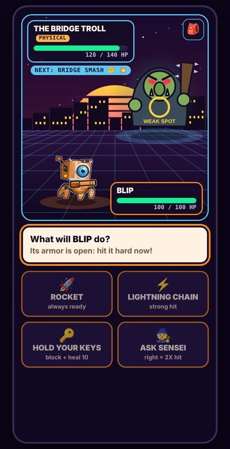
The Bridge Troll lifts its club
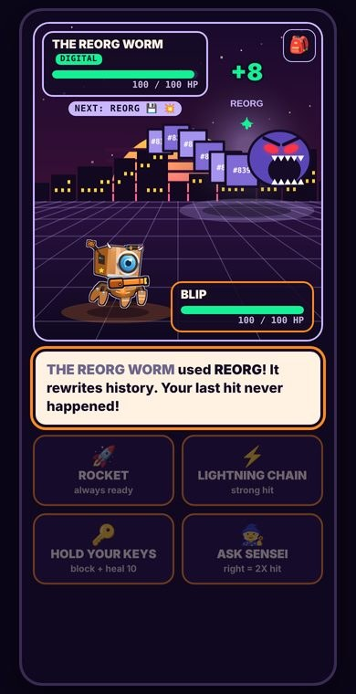
The Reorg Worm rewrites history
Hacker skills & the Terminal
Everyone starts with 2 Hash points. Earn more: 1 every 5 levels, 2 for each boss battle you win, and 1 for every 3 right Sensei answers. Spend it in the green Terminal, which opens from the menu card, the shop or your gear bag. There are 12 skills in 3 branches: Exploits (attacks), Cold Storage (defense) and Cypherpunk Tricks. Each skill goes from LV 1 to 3. A tier 2 skill opens once you know a tier 1 skill in the same branch. Reset gives every point back for free. In battle, learned skills show up under 💻 HACK.
Physical vs digital. Every move and every boss is physical ✊ or digital 💾. Digital hacks can't touch a physical boss, so they show IMMUNE. Rockets only half-hurt a digital boss. A matching type hits 25% harder. Hybrid bosses like Mt. Gox, FTX and Head Office take full damage from both.
Special Blips: skill slots & classes
Only 3 skills go into battle at once. Learn as many as you like, then tap + PUT IN A SLOT in the Terminal to choose your 3. Reset stays free.
Put the right 3 together and Blip transforms into a special edition with its own look, its own rockets (in runs and battles) and a bonus:
The Phreaker: any 3 Exploits skills. Hacker green, data-packet rockets. Attack hacks recharge 1 turn faster.
Cold Vault: any 3 Cold Storage skills. Ice armor, ice-shard rockets. Firewall and Multisig each block 1 extra hit.
Cypher Ghost: any 3 Cypherpunk Tricks skills. See-through and glitching. A ghost copy takes the boss's first hit.
??? (secret): the three strongest skills together. We won't spoil this one.
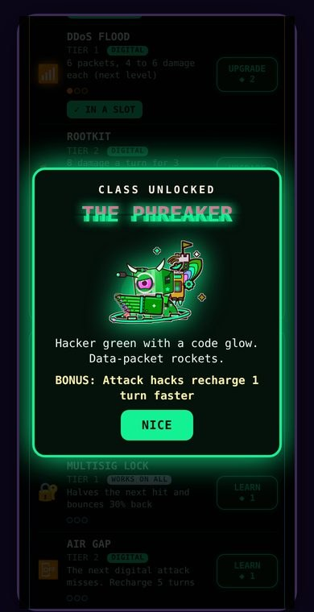
Class unlocked
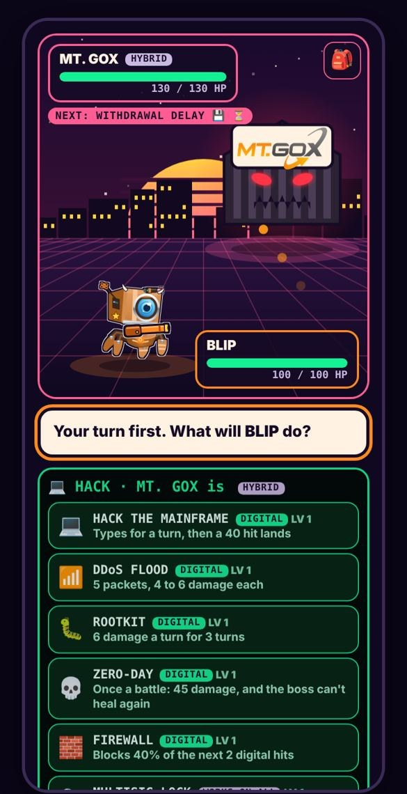
The HACK menu
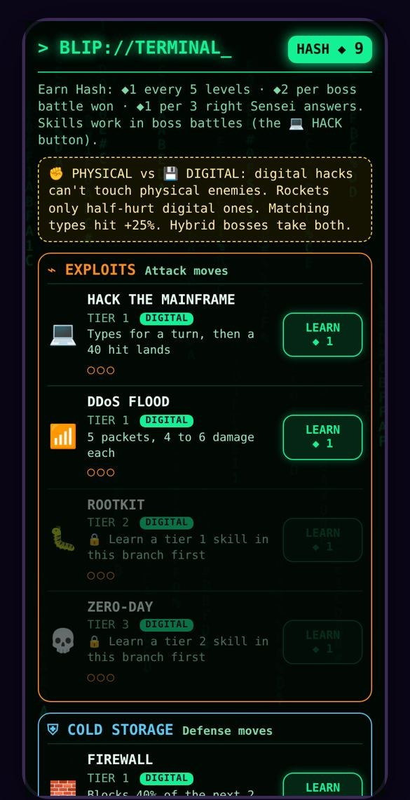
The Terminal
06
Between eras
When you clear an era, three short screens follow.
Era cleared. Your grade (S, A, B, C or D, from your kills, streak, hits taken and aim), your stats and a Blip's Tips card: one safety tip, self-custody tip or bit of Bitcoin history, a new one every time (32 in all). Tap SHARE THIS ERA to post it, or PROCEED at the top.
One question. Each era has 6 Sensei questions that climb from ★ easy to ★★ harder to ★★★ hardest. Answer right for +600, +900 or +1,200 XP, full health, a shield and 2x XP. A question you get right never comes back; a missed one does. A wrong answer still gives +100 XP and heals you halfway. Tap ASK A FRIEND to send the question to someone. Want the history? Tap THE STORY OF THIS ERA and Sensei Stackysius, Blip's robot monk teacher, tells it.
The shop and START. Spend XP on one upgrade, see the next era's goal, then tap START. The journey map and the next era's story are under a tap-to-open box.
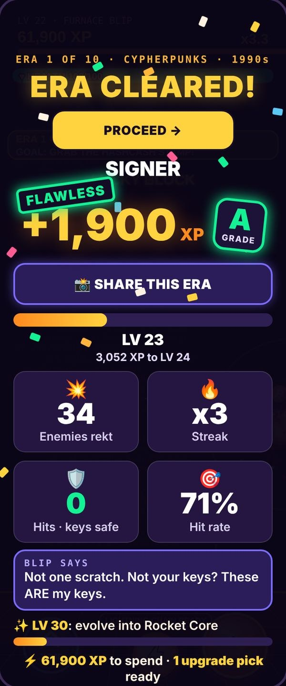
Era cleared + your grade
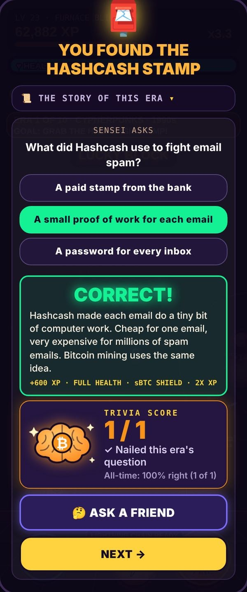
The era question
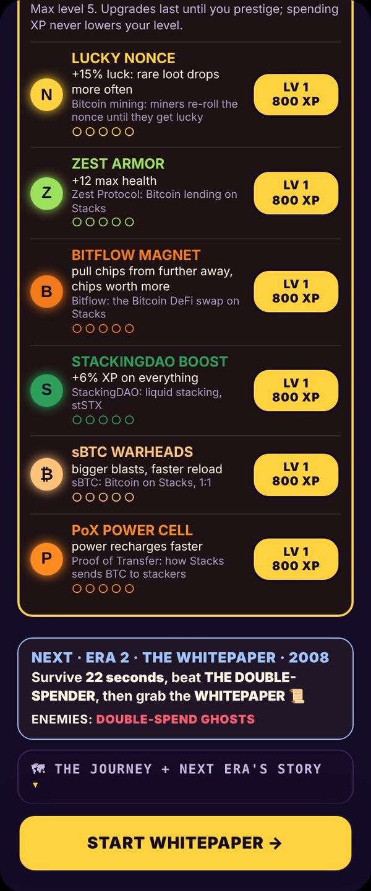
Shop, next era, START
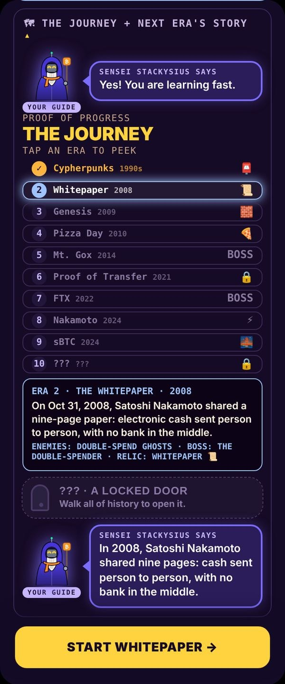
The journey (tap to open)
07
Loot & Lucky Nonce
Every enemy you destroy rolls the dice for a drop. Run into drops to grab them.
Drop
Rarity
What it does
XP chips
Common
XP
Heart
Uncommon
+35 health
Bitcoin coin
Uncommon
2x XP for a while
Bitflow magnet
Rare
Pulls chips to you
sBTC shield
Rare
Blocks the next hit
Meme coin
Rare
Goes in your Meme Bag
Zest
Epic
Unstoppable for a while
Lucky Block
Legendary
A jackpot of loot
Lucky Nonce is your luck score. It makes rare drops come more often. You get luck from your level (half your level, as a %), from each prestige (+10%) and from the Lucky Nonce upgrade in the shop (+15% a level). The name comes from Bitcoin mining: miners keep re-rolling a number called the nonce until they get lucky.
Meme coins ($FLAT, $LEO, $DOG) are silly community memes on Stacks, just fun to collect. Get all 3 for a badge. They are not investments.
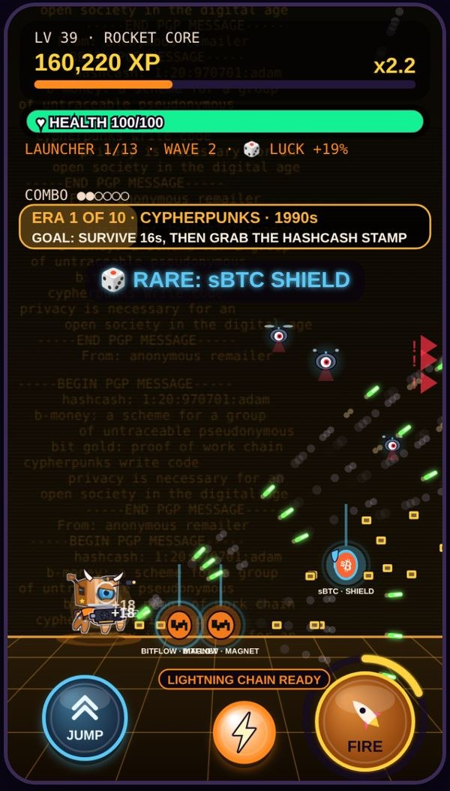
A rare drop
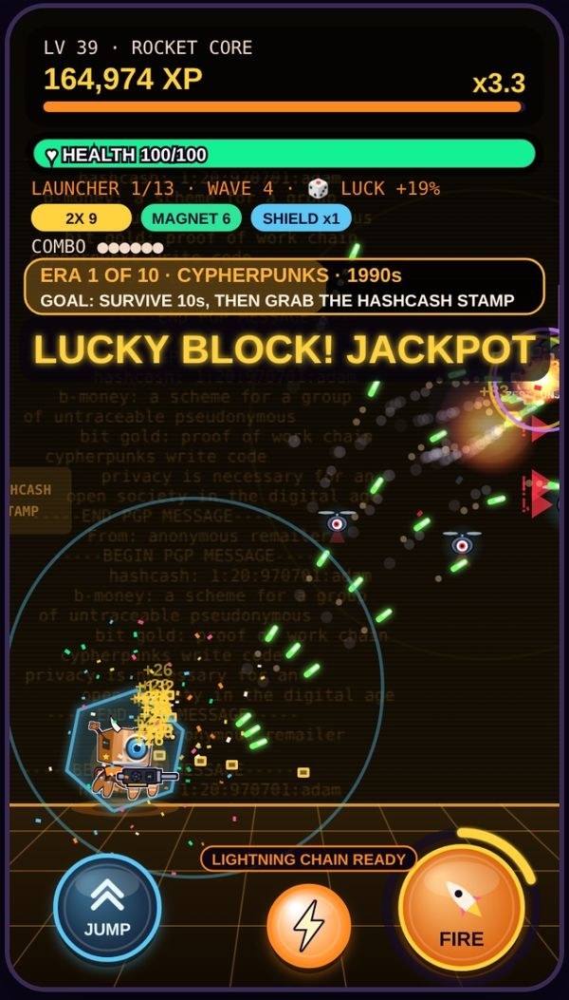
Lucky Block jackpot
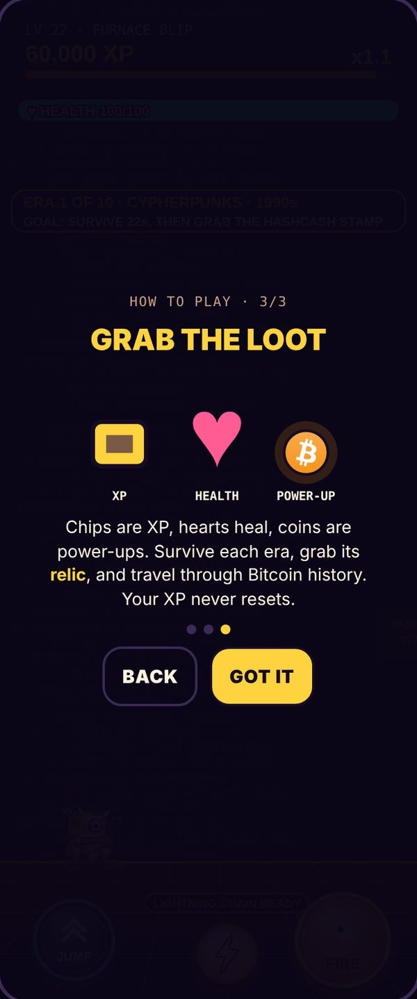
The coin power-ups
08
The upgrade shop
After each era you can buy one upgrade with your XP. Each one goes up to level 5. Prices are 800, 2,000, 4,500, 9,000 and 18,000 XP. Spending XP never lowers your level.
Upgrade
Each level gives
Lucky Nonce
+15% luck for rarer drops
Zest Armor
+12 max health
Bitflow Magnet
Pulls chips from further away, chips worth more
StackingDAO Boost
+6% XP on everything
sBTC Warheads
Bigger blasts, faster reload
PoX Power Cell
Your power recharges faster
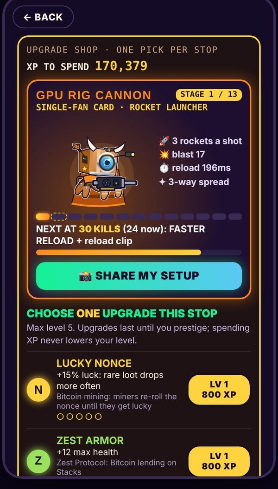
The shop also shows your launcher
09
Launchers & the Garage
Your launcher climbs 13 stages every run as you rack up kills, and changes look three times on the way. There are 9 launchers. You unlock them by playing:
Launcher
Style
How to unlock
Genesis Tube
All-rounder
Yours from day one
GPU Rig Cannon
3-way spread
Clear the Genesis era
Cold Storage Cryo
Freezing shots
Beat the Mt. Gox boss
Halving Howitzer
Shells split in half
Clear 4 eras in one run
Hash Board Gatling
2x fire rate
Reach 1,000 total kills
Lightning Arc
Shots arc on
Hit a x6 combo
Pizza Day Drum
Bouncing pizzas
Clear Pizza Day with an A or S
Full Node Railgun
Piercing rails
Get 10 questions right
PoX Reactor
2x power charge
Clear the Proof of Transfer era
The Blip Garage holds up to 6 Blips. Each one keeps its own name, color (path) and launcher. Tap a launcher to read its story, and share any Blip or launcher as a picture.
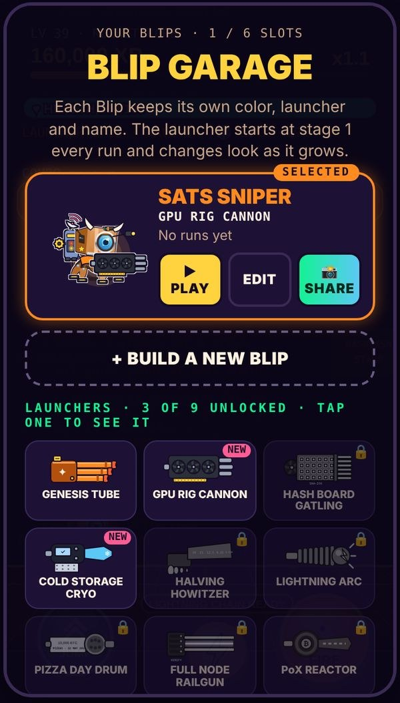
The Garage
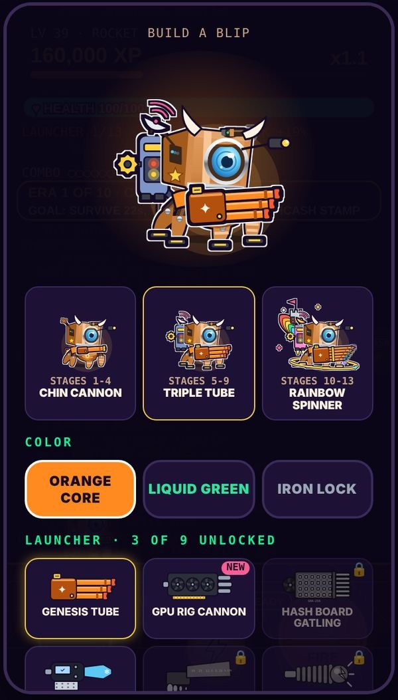
Build a Blip
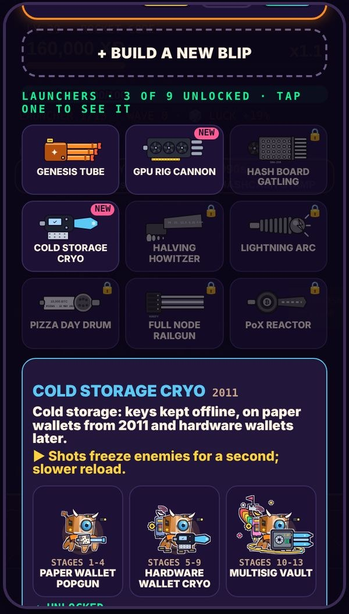
Launcher info
10
Levels, evolving & prestige
Your XP never resets. Every run adds to it. Early levels earn XP more slowly, and you get full XP from level 40 on.
Blip evolves as you level up, with new looks and gear like a cape.
At level 100 you can prestige: Bronze, Silver, Gold, Diamond, then Legend. Each tier adds a new look and +10% luck. Shop upgrades start fresh when you prestige.
There are 21 badges to collect, like First Blood, Max Combo and Coin Trio.
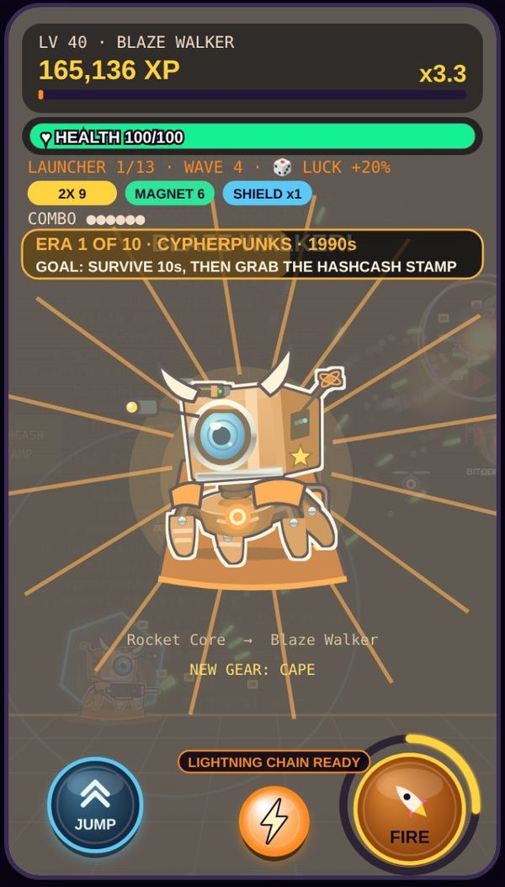
Blip evolves mid-run
11
Blip Academy
Quizzes you can play from the menu, for XP. Nothing leaves your phone.
Three tracks: OpSec (seeds, scams, phishing), Sovereignty (self-custody, nodes) and Bitcoin Trivia.
5 questions a round. +250 XP per right answer, +1,000 for a perfect round.
3 rounds a day per track. Learn all 20 in a track to unlock its gear: the Foil Hood, the Node Lantern or the Satoshi Scroll.
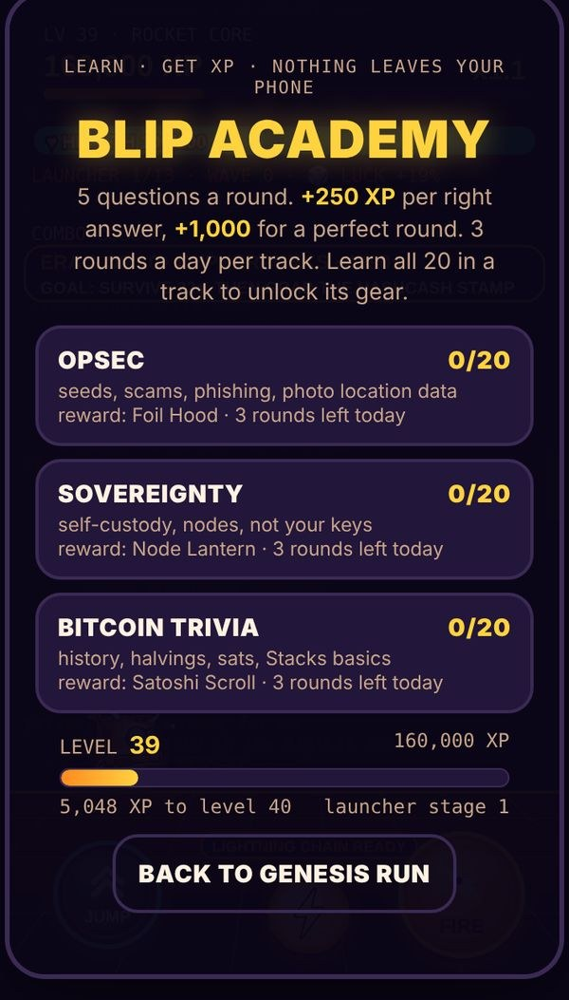
Pick a track
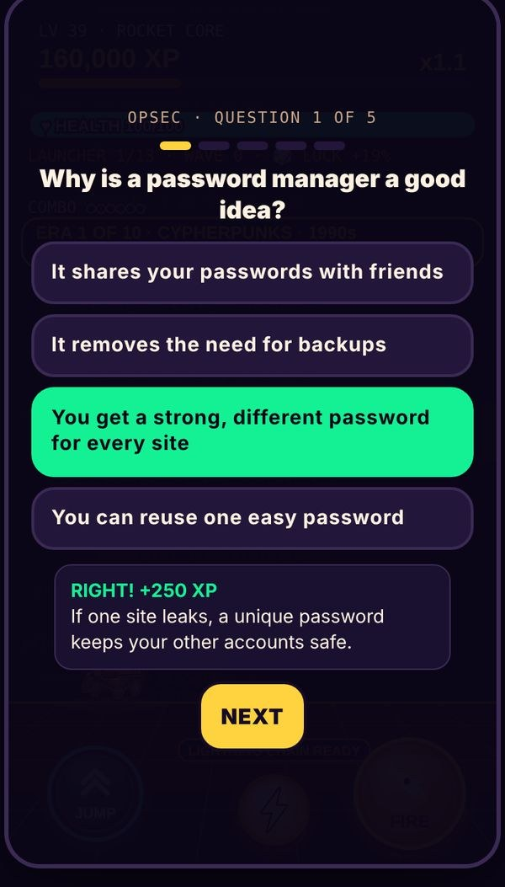
Learn something, get XP
12
Daily Run & sharing
Everyone plays the same map each day (it changes at midnight UTC). The menu shows today's map number and your best score on it.
SHARE TODAY'S RESULT makes a little emoji summary of your run, like Wordle.
SHARE CARD makes a picture of your run.
Every share includes the game link, blip-yield.blipyield.workers.dev/play. When a friend opens it, they first see "A friend scored ___ XP" with a PLAY button, and the game tells them if they beat it.
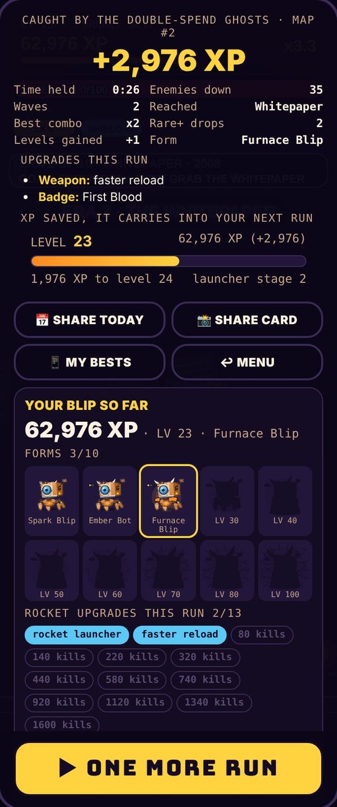
When a run ends
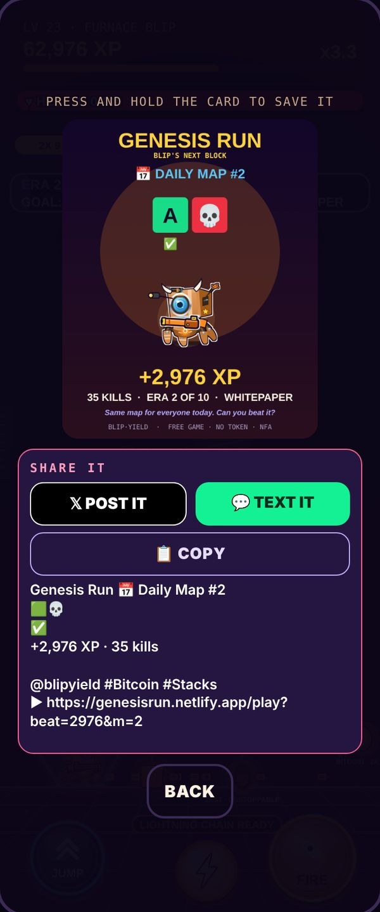
Share today's result
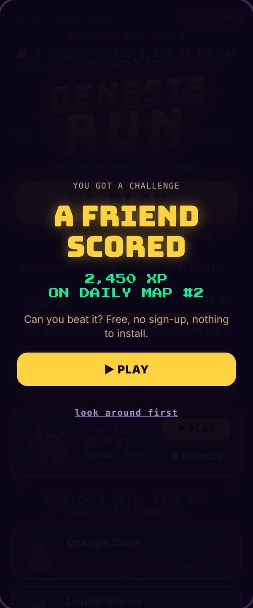
A friend's challenge
13
Backup code: move your Blip
Your Blip saves on this phone, in this browser only. Another browser or phone starts fresh, and clearing your browser data wipes it.
To keep it safe or move it, tap BACKUP CODE · MOVE MY BLIP on the menu, then COPY MY BACKUP CODE and keep it in your notes. On the other phone or browser, paste it and tap LOAD THIS BLIP twice. Your level, XP, Garage and badges all come across. When you reach level 10, the game reminds you once.
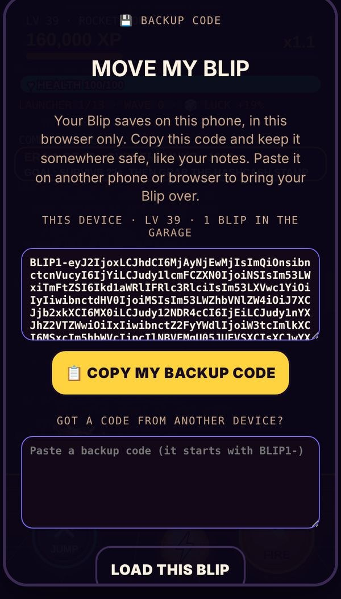
The backup code screen
The backup code is only game progress. This game never asks for a seed phrase, key or wallet, and nobody real ever will.
14
Extras
The public board & the Genesis Cup
After a run, a yellow box asks for a nickname (like satoshi.btc). Pick one once and tap POST. After that, every run posts by itself and the box shows your rank. Only the nickname, score, era and date are saved. Never use a wallet address as a nickname.
🏆 LEADERBOARD on the menu shows the board: THIS WEEK, ALL TIME and 👑 WINNERS. Your own name is marked in gold. MY BESTS ON THIS PHONE and CHALLENGE A FRIEND are on the same screen.
The Genesis Cup starts Monday 26 Oct and runs every week, Monday to Sunday (UTC). Tap ▶ PLAY THE CUP MAP on the board: everyone gets the same map that week, starting at era 1, and only those runs count for the week. The best Cup score of the week joins the winners list. It's for bragging rights only: no money or token prizes.
Report a problem
Tap ⚠ REPORT A PROBLEM on the pause screen or the run-over screen. Pick where it happened, write a few words and tap SEND REPORT. Blip reads every report. Never type a seed phrase, password or wallet address there.
Hold fire
The HOLD FIRE switch on the menu lets you hold the FIRE button instead of tapping. It's off unless you turn it on.
BLIP·YIELD
Genesis Run is a BLIP·YIELD game. The small line at the bottom of the menu opens the BLIP·YIELD Stacks yield tracker in a new tab.
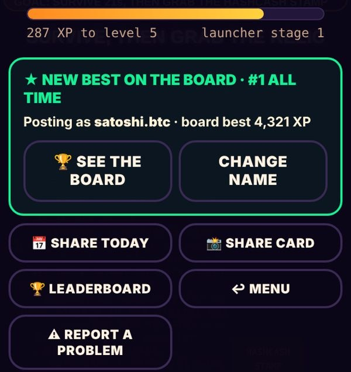
Your run on the board
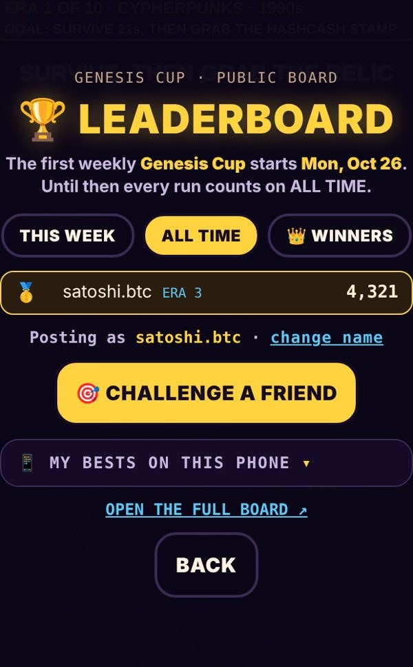
The leaderboard
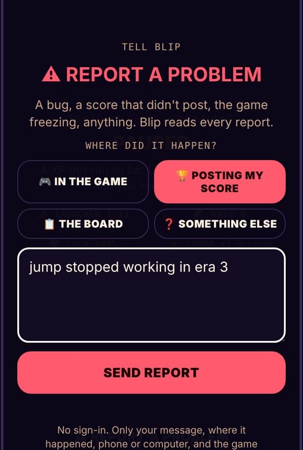
Report a problem
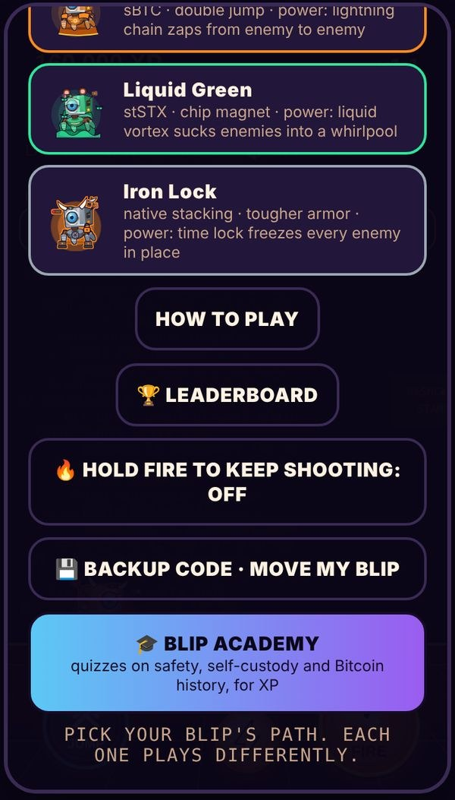
Menu switches
15
The secret level
There's a locked door on the menu. It opens once you walk all of history.
Spoiler: tap to see what's behind it
The Bull Run. An endless level with no finish line. Every 30 seconds it gets faster and a new bull joins. Golden bulls drop 5x XP, and a Mega Bull charges in every 5 waves. Jump over the herd or blast it. The game remembers your best time.
Era 10 is Blip's Era, where Head Office itself comes for him.
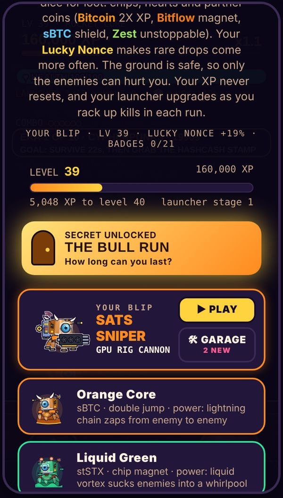
The door opens
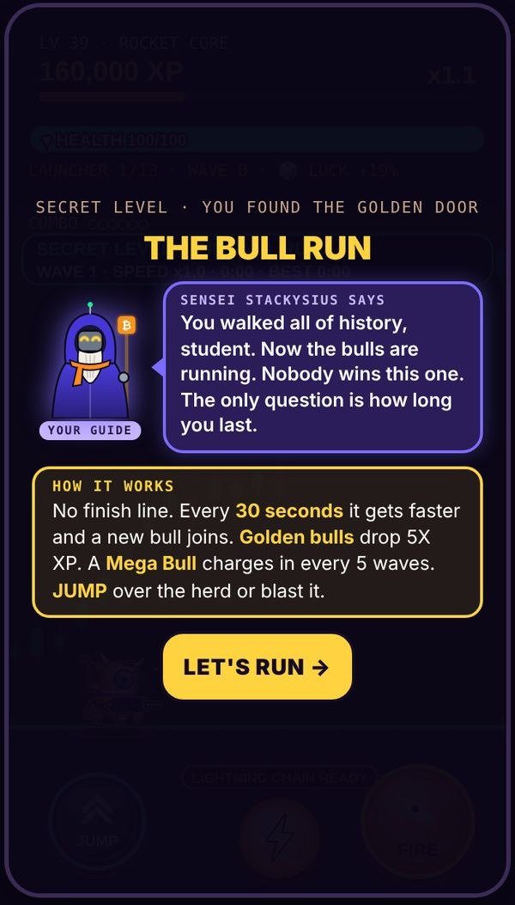
The rules
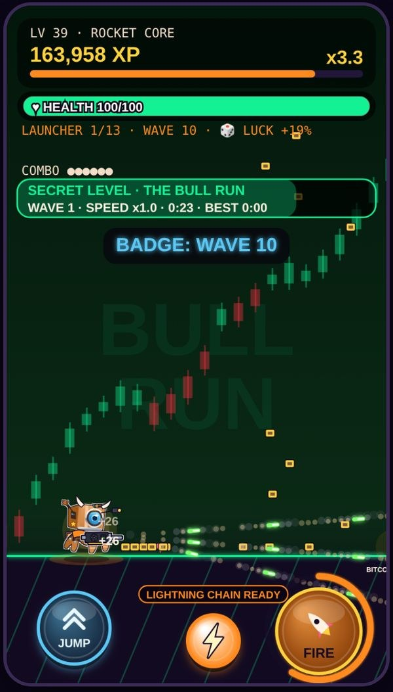
How long can you last?
16
♥ Tip jar
Genesis Run is free, with no ads and no token. If it made you smile or taught you some history, you can send Blip a tip at either address. These are the same addresses as the tip jar in the game.
STX · sBTC on Stacks
SPYGZ54VVPHMQBSBR4KYMBJV7ZRCC32GV3YGZGHK
BTC on Bitcoin
bc1quyt6q5l5695jcjwgc06uvgvz0cklq68erc8umm
Tips are a thank-you, nothing more. They never unlock anything in the game, and nobody will ever ask you to connect a wallet. Always check the whole address before you send. NFA.